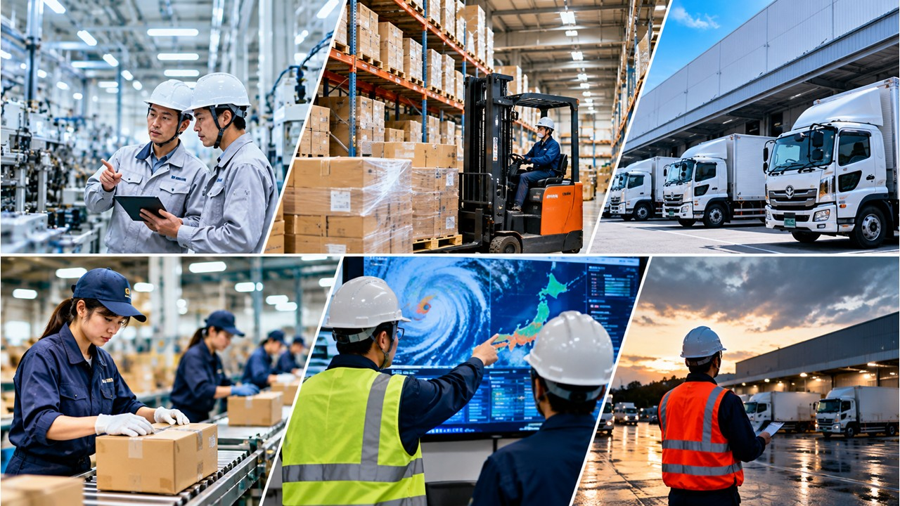
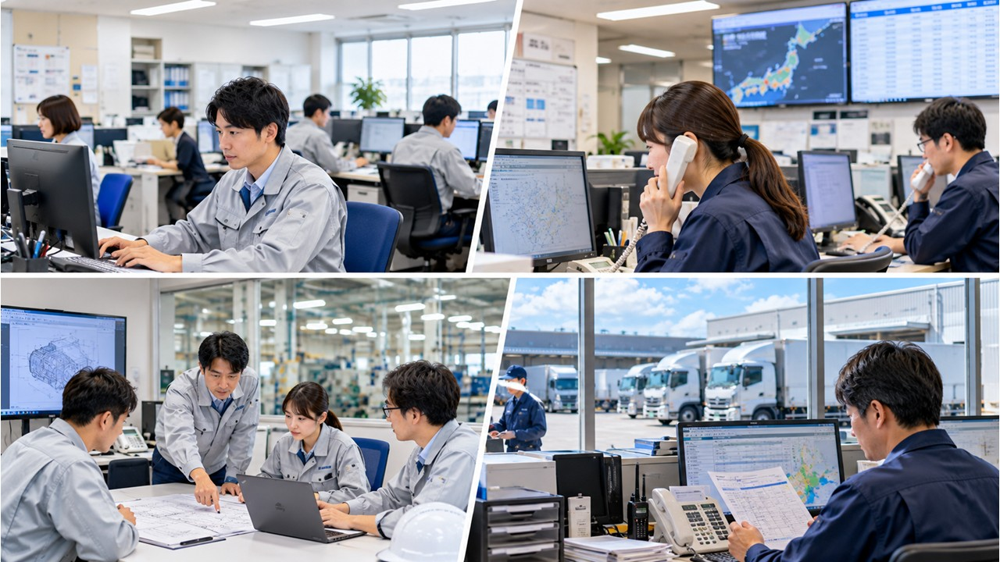

🏭製造業・物流運輸業 それぞれが直面するリスク
🏭 製造業のリスク
- 工場設備・機械の損壊による生産ライン停止
- 原材料・部品の調達困難（サプライチェーン寸断）
- 作業員の安否確認と緊急参集体制の不備
- 危険物・化学物質の漏洩・二次災害リスク
- 電力・ガス・水道などライフライン停止による操業不能
- 品質保証・納期対応への影響と取引先への連絡体制
🚚 物流・運輸業のリスク
- 道路寸断・通行止めによる配送ルートの遮断
- 車両・ドライバーの確保困難
- 燃料不足による運行停止
- 倉庫・物流センターの損壊と在庫管理の混乱
- 荷主との連絡途絶と配送情報の共有不足
- 冷凍・冷蔵品など温度管理が必要な物資の対応

⚠️製造・物流業が共通して抱えるＢＣＰ課題
🔗 サプライチェーン全体の脆弱性
自社だけでＢＣＰを策定しても、仕入れ先・納品先が被災すれば事業継続は困難です。取引先と連携したＢＣＰ構築が求められます。
👥 多拠点・多人数での初動対応
工場・倉庫・営業所など複数拠点を持つ事業者は、各拠点の被害状況を迅速に把握し、本部が統括指揮する体制が必要です。
🏭 設備復旧の優先順位づけ
全設備の同時復旧は不可能です。「どのラインから復旧するか」「何を最優先で生産するか」を事前に決めておくことが早期再開の鍵です。
📋 行政・自治体への報告義務
食品・医療・エネルギー等の製造業は、被災時の生産状況を行政に報告する義務が生じる場合があります。報告フローの整備が必要です。
📋ＪＤＲＳが提供する製造・物流系ＢＣＰ訓練
現場の実態に即したシナリオで、座学と模擬訓練を組み合わせた実践的なプログラムを提供します。
- 1 初動対応シミュレーション 地震・浸水・停電発生時を想定した初動の意思決定訓練。現場リーダーが「今何をすべきか」を自ら判断できる力を養います。
- 2 サプライチェーン・リスク洗い出し 仕入れ先・外注先・物流パートナーのリストアップと代替先の検討。「どこが止まると何が止まるか」を可視化します。
- 3 優先業務・優先設備の特定 限られた人員・資源の中で、最初に復旧すべき業務・設備・製品ラインを経営層と現場が一緒に決定するワークショップを実施します。
- 4 多拠点連絡訓練 本社・工場・倉庫・営業所が迅速に情報共有できる連絡体制の構築と実際の伝達訓練を行います。通信不通時の代替手段も確認します。
- 5 行政・取引先への報告訓練 被災時に取引先・行政へ速やかに状況報告できるよう、報告書式・連絡先リスト・情報収集手順を整備し、実際に練習します。

🏭対象業種・ご相談先
製造・物流・運輸に関わるあらゆる規模の事業者に対応しております。
食品製造業
部品・機械製造業
素材・資材製造業
物流・倉庫業
運輸・配送業
陸運・海運・航空
工場・生産ライン管理
サプライチェーン管理部門